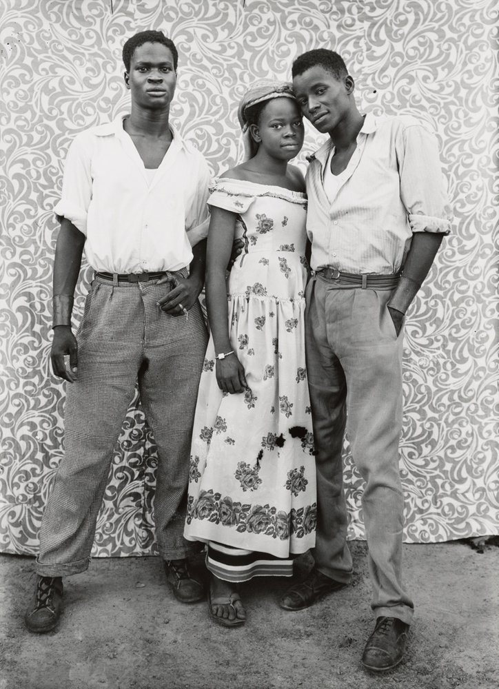

Untitled
Seydou Keïta · 1956/57, printed 1998 · Gelatin silver print · 36 × 51 cm (image) · Art Institute of Chicago
In copyright. Look and learn: shown for study, not for download.
Seydou Keïta worked as a carpenter as well as a photographer when he started, and in 1948 he set up a studio in his family's house in Bamako, behind the main prison. He showed clients earlier portraits, let them choose a pose and then corrected it. He did not record his sitters' names. He changed his props every few years, which later helped to date the pictures. The studio closed in 1963, and this print was made in 1998 from a negative of the mid-1950s.